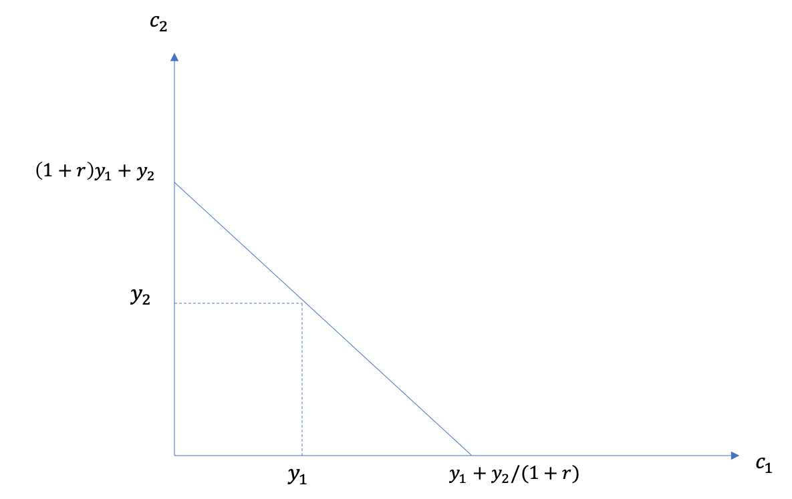
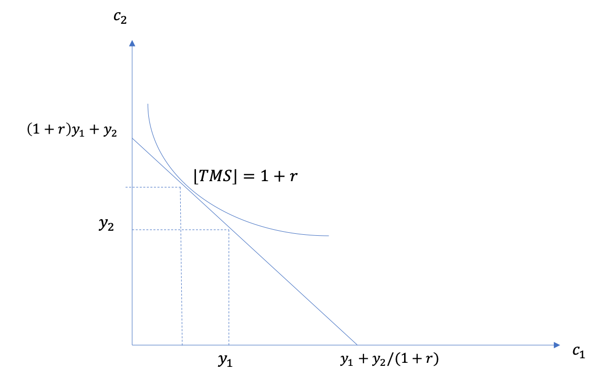

Le Temps¶
Préférences¶
Les individus préfèrent généralement un bénéfice le plus tôt possible et un coût le plus tard possible:
Un café maintenant ou dans une heure?
Aller au Gym aujourd’hui ou demain?
Épargner aujourd’hui pour dépenser demain?
L’évidence empirique indique que l’origine de ces préférences peut-être traçée à l’enfance…
Utilité escomptée¶
Dans son livre The Theory of Interest en 1930, Irving Fisher présente une théorie assez simple, mais qui servira de modèle pour des centaines de travaux en micro et macroéconomie. Les préférences y sont représentées par l’utilité escomptée.
Si \(u(C_t)\) est l’utilité de consommer à la période \(t\), l’utilité escomptée pour un plan de consommation \(\textbf{C} = (C_1,...,C_T)\) est :
\(\delta\) \(\in [0,1]\) est le facteur d’escompte (patience) alors que \(\mathbf{C} = (C_1,...,C_T)\). La relation entre le facteur d’escompte et le taux d’escompte \(\rho\) est donné par:
Taux marginal de substitution (TMS)¶
Si \(T=2\), alors
La différentielle totale donne le TMS:
Les préférences intertemporelles sont caractérisées par:
Le facteur d’escompte (\(\delta\))
La forme de \(u\).
Exercice A: Trouvez le TMS pour \(u(C_t) = \log C_t\)
Comment estimer le taux d’escompte? On peut utiliser les listes de prix multiples.
Une expérience au Danemark réalisée auprès de fonctionnaires Danois a permis d’estimer le facteur d’escompte au niveau individuel (Harrison, Lau and Williams, 2002)

Les résultats montrent une grande dispersion et des taux d’escompte élevés, beaucoup plus élevés que les taux d’intérêts.

La contrainte intertemporelle¶
Marché financiers et intérêt
Institution financière offre \(r_S\) pour chaque dollar déposé (épargne). Elle nous demande \(r_D\) pour chaque dollar prêté
Supposons pour le moment \(r_D = r_S = r\).
Ressources
Les ressources proviennent de:
Richesse initiale: \(W_0\).
Revenu dans les deux périodes, \(Y_1\), \(Y_2\).
La valeur présente des ressources est :
Constrainte
La valeur présente de la consommation est:
Ainsi, la contrainte intertemporelle est \(VP_C \leq VP_W\):
Emprunt et épargne
On peut écrire la contrainte comme étant :
Ainsi,
L’individu qui épargne en première période, peut consommer plus que son revenu en 2e période.
L’individu qui emprunte en première période, doit consommer moins que son revenu en 2e période.
Visualement, on a

Exemple: Un régime de retraite à prestation déterminé force l’individu à épargner dans la première période et donne un revenu additionel dans la deuxième.
Revenu en 2e période est \(Y_2 = \phi Y_1\) avec un taux de remplacement \(\phi \in [0,1]\).
Le revenu de première période est amputé d’une contribution \(\tau Y_1\).
La contrainte budgétaire est donc:
Le taux de contribution est choisi par l’actuaire \(\tau\) tel que:
où \(r_P\) est le taux de rendement implicite du régime de retraite. Si \(r_P = r\), la contrainte budgétaire ne change pas! Le plan de consommation ne change pas et donc l’épargne privée est réduite d’un même montant que la contribution (Effet d’éviction).
Écarts de taux emprunts vs. épargne
Exercice B: À quoi ressemble la contrainte si \(r_S<r_D\)?
Exercice C: Comment représenter une situation où l’agent ne peut emprunter?
Choix optimal¶
Maximisation
Le problème est (fixons \(W_0=0\) pour simplifier):
Deux approches:
Approche directe (substitution de la contrainte)
Lagrangien
Conditions d’optimalité
Le Lagrangien a 3 CPO:
Avec (1) et (2) on obtient :
On peut réarranger et en fixant \(R=1+r\), on obtient l’équation de Euler:
Visualement

Cette théorie serviva de fondation pour la théorie du cycle de vie (the Life-Cycle Hypothesis), proposée par Franco Modigliani, qui permettra de comprendre les choix en fonction de l’âge d’un agent. L’équation de Euler dérivée ici-haut suggère qu’un individu aime lisser sa consommation sur le cycle de vie, et par conséquent, s’il fait face à des revenus élevés durant sa carrière et faible plus tard, il épargnera quand il est jeune et consomme cette épargne quand il est plus vieux. Ceci servira de fondation pour l’étude de l’épargne, de l’assurance-vie, de l’immobilier et d’un tas d’autres décisions financières.
Exercice D: Trouvez le choix optimal de \(C_1\) et \(C_2\) si \(u(C)=\frac{C^{1-\sigma}}{1-\sigma}\) et avec une contrainte budgétaire classique.
Exemple: Épargne-t-on assez pour la retraite?
Une question très présente dans le débat public.
Le Conseiller, Globe and Mail, L’Actualité¶
On peut simuler des taux de remplacement effectif avec des modèles sophistiqués mais difficile de dire ce qui est assez ou non…
McKinsey (2015)¶
Pour des calculs plus récents, voir ce rapport de l’Institut Retraite et Épargne à HEC.
Épargne optimale
Qu’est-ce que la théorie nous dit sur l’épargne optimale?
Exercice E: Trouvez une expression pour le niveau optimal d’épargne en début de 2e période si \(u(C)=\frac{C^{1-\sigma}}{1-\sigma}\) et la contrainte est donnée par:
Des calculs plus sophistiqués donneront peuvent être fait pour comparer l’épargne accumulée à la retraite à l’épargne optimale selon un modèle:

Les conclusions sont parfois surprenantes comparativement à ce qu’on observe dans les médias. Une grande majorité semble épargner assez. Certains épargnent trop, ce qui est dommageable en terme de bien-être mais probablement bénéfique pour certaines institutions financières.
Biais pour le présent¶
Comme nous l’avons vu, les gens peuvent être très impatients. Mais leur préférence peut tout de même respecter les principes de l’utilité escomptée. Cependant, il existe plusieurs violations de l’utilité escomptée. Nous nous concentrons ici sur le biais pour le présent.
Exemple: Choisir un film
Vous devez choisir un film à regarder aujourd’hui et un la semaine prochaine:
Supposons que Mommy a un bénéfice immédiat de 4 et un bénéfice futur de 4 mais que Les Boys a un bénéfice immédiat de 7 (aucun bénéfice futur).
Exercice F: Quel est l’utilité escomptée is vous choisissez aujourd’hui et \(\delta=1\). Que se passe-t-il si vous choisissez plutôt pour la semaine prochaine (et la suivante, donc vous ne regardez rien cette semaine)?
L’évidence empirique montre que les gens préfèrent les Boys si le choix se fait aujourd’hui mais Mommy si le choix est fait pour la semaine prochaine. L’utilité escomptée ne permet pas d’expliquer que le choix dépend de l’horizon. Cet exemple est un parmi d’autres d’incohérence intertemporelle.
Biais pour le présent
Laibson (1997, QJE) propose une modification assez simple aux préférences escomptées, soit l’introduction d’une fonction d’escompte quasi-hyperbolique:
Le paramètre \(\beta\) agit comme paramètre de biais pour le présent (facteur d’escompte à court terme) alors que \(\delta\) contrôle l’impatience à long-terme. Ces préférences dépendent maintenant de l’horizon…
Exercice G: Quel est le TMS entre les consommations \(C_1\) et \(C_2\)? Et \(C_2\) vs. \(C_3\)? Comparez avec l’espérance d’utilité.
En utilisant l’exemple des deux films, supposons maintenant \(\beta=0.5\).
Exercice H: Quel film choisissez-vous pour aujourd’hui et pour la semaine présente si vous avez des préférences quasi-hyperboliques? Et si le choix se fait la semaine prochaine?
Solution, voir vidéo Exercice F.
Les préférence quasi-hyperboliques capturent bien ce pattern de choix.
Exemple: Qui s’abonne au Gym?
Dans un article intéressant, Della Vigna et Malmendier (2006) étudie le choix de prendre un abonnement au Gym plutôt que d’acheter des passes individuelles. Une passe d’une visite coûte 10$. Le coût par visite des gens qui s’abonne est beaucoup plus élevé que 10$. Pourquoi les gens achètent-ils un abonnement? Sont-ils naifs par rapport au fait qu’ils ont des préférences quasi-hyperboliques?
Il y a évidence que certains sous-estiment leur degré de biais pour le présent. Ils sont naif par rapport à leur problème de biais pour le présent.
Exemple: Comment aider les gens à épargner?
Épargner est similaire à aller au Gym: coûteux dans le court-terme (sacrifice de consommation), bénéfique à long-terme (consommation future).
Pour aider les gens avec ces biais, on pourrait décider de changer l’option de défaut: opt-in vs. opt-out. Au lieu de devoir décider d’épargner (défaut = n’épargne pas), on peut par défaut forcer les gens à épargner et ils peuvent arrêter s’ils le veulent (défaut = épargne) … Ce petit changement a de gros impacts.
Shea et Madrian (2001, QJE) montre que l’épargne, à court-terme pour les entreprises qui changent le défault, augmente.
Moins évident à long-terme…
Engagement
Les gens au prise avec un problème de la sorte, pourrait vouloir, rationellement, qu’on limite leur choix. Par exemple, en ne leur permettant pas de succomber à la temptation à court-terme dans leur propre intérêt. David Laibson de Harvard, et plusieurs autres, étudient des mécanismes de la sorte, appliquées à la santé et l’épargne par exemple. Il semblerait qu’il y a une demande pour ces mécanismes (demand for commitment).